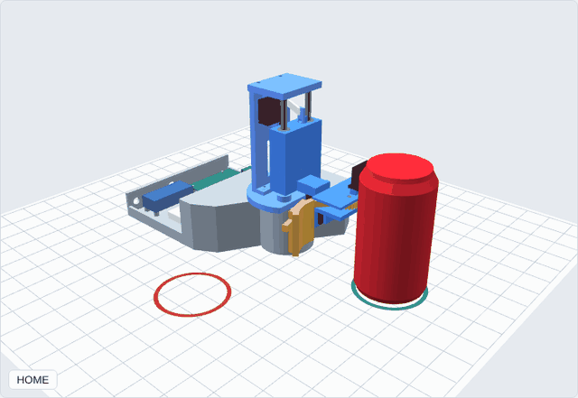
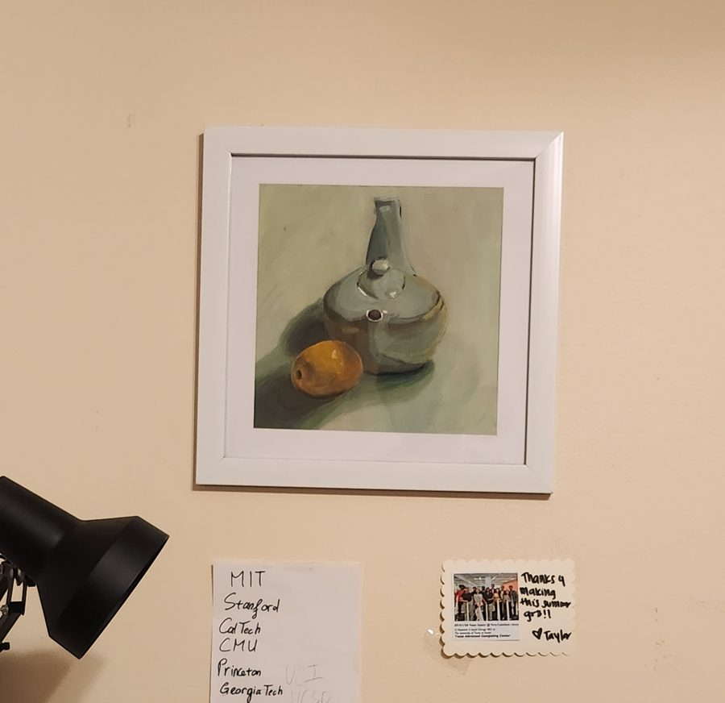

- SAR ADC (in progress). A successive-approximation analog-to-digital converter, from a Python model and Verilog control logic down to transistor level. Results and a project page come once there are simulations to show.
- Budget robot arm (Fall 2026). An Arduino Uno and four hobby servos grip an upright can, lift it, flip it 180° and set it down 90° away. Four concepts ranked in a decision matrix, CAD that passes 43 of 43 engineering checks, and LTspice models of the servo power rail. Designed and simulated; the physical build is next. Interactive viewer

Detail CAD running the firmware sequence. - EEG attention detection (Spring 2026, team project). XGBoost classifier on EEG band-power features from 60 subjects; 64.3% accuracy on engaged vs low-attention states. Journal entry
- Methane emission monitoring (Spring 2026, Fung Fellowship, team of 4). A $15 household methane sensor built from off-the-shelf parts, shaped by 12 stakeholder interviews with Climate Action California. Findings went to the California Air Resources Board. Journal entry
The methane team at the Fung Fellowship showcase, Spring 2026. Photo: Fung Institute. 
The sensor prototype on a breadboard. Photo: Fung Institute. - Drone-UGV disaster response (2024 to 2026). Drones scout a disaster area and hand off to ground robots through a shared map. Three multi-agent learning methods, measured against doing nothing.
- Acoustic positioning (Fall 2025, EECS 16A). Locates a microphone in 2D from time differences of arrival, using cross-correlation and least squares.
- Voice command classifier (Fall 2025, EECS 16A). Mel-spectrogram features, PCA and nearest-centroid classification; about 97% on live recordings of one speaker.
- 2024 REU: fair multi-robot task allocation (Summer 2024, TACC). Linear-programming task allocation, a fairness-weighted learning reward (FE-MADDPG) and conflict-based path search for five robot roles, rebuilt as a browser simulation. Simulation
About

I study Electrical Engineering and Computer Sciences at UC Berkeley. I started at Cypress College in mathematics and physics, and physics left me with a habit: understand how something works before building it. If I can predict what a circuit or a channel will do, I can tell when a measurement is wrong. That habit is why I lean toward integrated circuits and signal integrity.
My target is IC design, analog and digital, with an interest in high-speed links and RF. Right now I am a product engineering co-op on RF front-end parts at Skyworks, I volunteer on a community solar and storage microgrid in Huron, CA, and I am designing a SAR analog-to-digital converter (successive-approximation ADC), from a Python model and Verilog control logic down to transistor level. Its page goes up once there are simulated results to show.
Quantum sounds fun, lol. I saw that quantum computer, and it looks like it came out of a comic. I want to work on it someday.
I hike and camp, mostly in Yosemite. After six hours of driving, the cold air on the last curvy road through the trees is my favorite part. I take photos of ordinary things, often scenes from Vietnam, and I paint. On weekends I cook, usually mixing Thai and Korean flavors.

University of California, Berkeley. B.S. Electrical Engineering and Computer Sciences, expected May 2028.
Cypress College. Associate Degree for Transfer in Mathematics and Physics, 2023 to 2025.
UC Berkeley Fung Fellow, Spring 2026. PEARC26 Student Program participant, TACC. Presenter at SCCUR and the STARS Celebration Conference, 2024.
Skills
| Skill | Where I used it |
|---|---|
| Circuits and boards | |
| PCB design (KiCad) | Controlled-impedance test board with a 12 in and a 1 in line, DRC-clean, not yet fabricated: SerDes test board |
| RF measurement (network and spectrum analyzers) | Gain, insertion loss and harmonic distortion on PA and LNA devices at Final Test: Skyworks |
| Power regulation and hardware debug | Power, wiring and debugging across 16 sensors and actuators on an underwater robot: Underwater Robotics |
| Digital design and verification | |
| SystemVerilog RTL | PRBS generator, 4-tap DFE and CDR loop filter: serdes-link/rtl |
| cocotb and Icarus Verilog | RTL checked against the Python model over 2,000 to 4,000 cycles: SerDes link |
| Signals and modeling | |
| High-speed link modeling (Python, NumPy, SciPy) | FFE, CTLE, DFE and CDR with a statistical eye and BER, 43 tests: SerDes link |
| Electromagnetic simulation (C++17) | FDTD solver with reflection, S-parameters and loss matched to theory: FDTD solver |
| Signal processing | MFCC audio features on a microcontroller; acoustic positioning by cross-correlation: AccessiSound, EECS 16A |
| Embedded and machine learning | |
| ESP32-S3 firmware (C++, PlatformIO) | I2S microphone, on-device features and inference, three hardware versions: AccessiSound |
| TensorFlow Lite Micro | 7,429-parameter CNN, 47 to 53% on 5 classes (chance 20%): accessisound/ml |
| Enclosure CAD (Fusion 360) | Printable two-shell enclosure with a mounting plate: accessisound/hardware |
| Test data and statistics | |
| Yield analysis (Cpk, SPC, ANOVA) | Die, wafer and module test data on high-volume RF products: Skyworks |
| Test-data pipelines (Python, C++, Rust) | Parsers and merge tools across several test-data formats: Skyworks |
| Learning and optimization | |
| Multi-agent reinforcement learning (PyTorch) | Three methods trained and compared to a do-nothing baseline: Drone-UGV |
| Linear programming | Fair task allocation across 5 robot types: 2024 REU |
Experience
Product Engineer Co-Op, Skyworks Solutions
- Characterize power amplifier and low-noise amplifier devices at Final Test with network and spectrum analyzers: insertion loss, gain and harmonic distortion.
- Trace yield trends and root causes on high-volume RF front-end products using process capability (Cpk), statistical process control and ANOVA on die, wafer and module test data.
- Build Python tools that merge test results across test types for parameter review, and maintain test-data conversion pipelines in Python, C++ and Rust.
Volunteer Electrical Engineer, The LEAP Institute
- Electrical engineering support for a community-led solar, battery storage and EV charging microgrid serving a farmworker community, with graduate students at UCLA and USF.
- Reviewed concept papers, budgets and a community survey (33 residents, 24 vendors) to find the main electrical loads: refrigerated storage, a cooling center, a commissary kitchen, and event lighting and stage power.
- Found that six planned DC fast chargers conflict with the net zero goal, and raised it so the team could define where the net zero boundary sits.
Electrical Subteam, Underwater Robotics
- Study power dissipation and heat in the NVIDIA Jetson modules that run the team’s autonomous underwater robots.
- Support power regulation, integration and debugging across 16 onboard sensors and actuators.
Summer Researcher, NSF REU at TACC
- Formulated multi-robot task allocation as a linear program that minimizes the largest workload gap across 5 robot types in a simulated disaster grid, run on an HPC cluster.
- Combined it with a fairness-weighted learning reward (FE-MADDPG) to improve task-distribution efficiency by 70% over the baseline. This work is the origin of the Drone-UGV project.
Physics Tutor
- Wrote Python and Jupyter simulations for electromagnetism and thermodynamics across 40+ tutoring hours, contributing to a 20% average gain in student exam scores.
Resume
Contact
Open to Summer 2027 internships and research opportunities in IC design, signal integrity and hardware engineering.
jack_pham@berkeley.edu · LinkedIn · GitHub